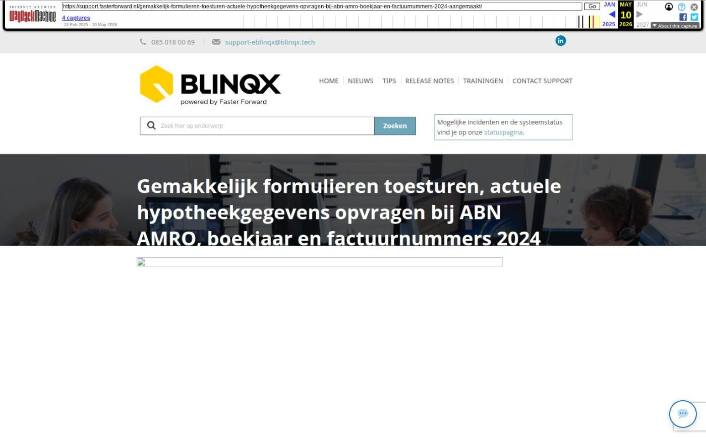

Gemakkelijk formulieren toesturen, actuele hypotheekgegevens opvragen bij ABN AMRO, boekjaar en factuurnummers 2024 aangemaakt

Tekstinhoud
Op 21 november 2023 is de techniek van Elements en eBlinqx weer vernieuwd en up-to-date. Ook zijn het nieuwe boekjaar en factuurnummer 2024 automatisch aangemaakt en is het mogelijk om via Finly gemakkelijk formulieren toe te sturen naar de klant.
Gemakkelijk formulieren toesturen naar klanten
Verbeteringen Uwkluis
Uitnodiging intrekken
Boekjaar en factuurnummers 2024 aangemaakt
Informatie-aanvraagberichten (IA) versturen naar ABN AMRO
Branche overnemen
Verbeteringen onder de motorkap
Nieuwe dekkingen volgens de SIVI update
Overige verbeteringen
Gemakkelijk formulieren toesturen naar klanten
Het is vanaf nu mogelijk om een zestal formulieren op te vragen bij Finly door middel van de workflow. De beschikbare formulieren zijn:
Schademelden
Opzegging
Intermediairwijziging
Zorgplicht
UBO
Risico inventarisatie
Vanuit de workflow geef je aan welk formulier je graag door de klant wilt laten invullen. Finly ontvangt hiervan een signaal en genereert de formulieren. Hierin worden automatisch de aanwezige NAWTE-gegevens die meegestuurd zijn vanuit Elements en eBlinqx verwerkt. Vervolgens komt hiervan een link terug naar Elements of eBlinqx. Vanuit de workflow wordt er een conceptmail klaargezet met daarin deze link. Deze verstuur je naar de klant. De link is eventueel ook op te halen door middel van een tag. De klant vult de formulieren in. Na het invullen komt het resultaat als PDF terug in het klantdossier in Elements en eBlinqx. Zodra het formulier ingevuld in Elements of eBlinqx staat, worden de personen en dossiers die in Finly zijn aangemaakt in Finly verwijderd. In de toekomst wordt het mogelijk om de formulieren beschikbaar te stellen in Uwkluis. Hier lees je meer over Finly.
Wil je hiervan gebruik maken? Neem dan contact op met Finly. Je kunt een e-mail sturen naar marnix.ravestein@finly.nl. Met hen sluit je eerst een overeenkomst af. Finly stuurt de gegevens naar ons, zodat wij de koppeling verder voor je kunnen inrichten.
Op maandag 27 november wordt er een webinar gegeven over efficiënt risico's inventariseren met Finly. Geef jezelf hiervoor op via deze link.
Verbeteringen Uwkluis
Uitnodiging intrekken
Je kunt nu gemakkelijk de verstuurde uitnodiging Uwkluis intrekken. Dit kan handig zijn wanneer je de uitnodiging naar een foutief e-mailadres hebt verstuurd of de uitnodiging niet meer gevonden kan worden na het klikken op de activatielink. Voor het intrekken van de uitnodiging ga je naar Export – Uwkluis. Hier klik je op 'Uitnodiging intrekken'. Je start vervolgens een nieuwe workflow Uwkluis op om vanuit daar de uitnodiging opnieuw te verzenden.
Boekjaar en factuurnummers 2024 aangemaakt
Faster Forward heeft het boekjaar 2024 alvast aangemaakt in jouw omgeving. Ook hebben we de factuurnummers al ingesteld als '20240001'. Het boekjaar en de factuurnummers zijn nodig voor het verwerken van ADN berichten, boeken van facturen en de financiële afwikkeling hiervan.
Let op: wil je een andere schrijfwijze voor de factuurnummers? Pas deze dan aan in Financieel – Factuurnummers overzicht.
Informatie-aanvraagberichten (IA) versturen naar ABN AMRO
Het is nu ook mogelijk om informatie-aanvraagberichten (IA) te versturen naar ABN AMRO. ABN AMRO stuurt dan via HDN (IX-bericht) hypotheekinformatie terug. Zo actualiseer je hypotheekgegevens van je klanten in Elements en eBlinqx.
Branche overnemen
In de release van september hebben we het mogelijk gemaakt, indien je werkt met mutatievoorstellen, dat de branche die wordt meegestuurd door de maatschappij in het ADN bericht automatisch wordt overgenomen in de productkaart. Ook worden eventueel de dekkingen aangepast. De velden of objecten die niet meer relevant zijn worden leeggemaakt of ontkoppeld na het verwerken van het ADN bericht. Het wel of niet overnemen van de branche is in te stellen door middel van een setting. Deze staat nu standaard op de branche niet overnemen. Wil je dat de branche wordt overgenomen na het verwerken van het ADN bericht stuur dan een e-mail naar support@fasterforward.nl.
Verbeteringen onder de motorkap
De softwaretechnieken van Elements en eBlqinx zijn weer verder vernieuwd. In februari is Elements compatible gemaakt met PHP 8.2. We hebben hier verdere verbeteringen op doorgevoerd. Ondanks dat je hier niets van merkt, is deze vernieuwing erg belangrijk.
Hierdoor kunnen we namelijk nieuwe innovaties blijven implementeren, omdat we gebruikmaken van de nieuwste software. Bovendien blijft de veiligheid gewaarborgd. Dit geldt zowel voor Elements en eBlinqx als voor alle koppelingen en exports, zoals klantportalen, adviespakketten, Excel en verbindingen met geldverstrekkers en verzekeraars.
Nieuwe dekkingen volgens de SIVI update
Als via ADN en Aplaza berichten binnenkomen, worden de nieuwste, bijbehorende dekkingen en/of voertuigen aangemaakt. Deze zijn namelijk uitgebreid volgens de SIVI richtlijnen van augustus en september. Hiermee zijn alle te selecteren verzekeringen up-to-date om correct te verwerken in een klantdossier.
Nieuwe dekkingen
Schade en persoonl. ongevallen in- en opzittenden
Zakelijk gebruik
Reizen en wonen
Vervangend object
Werkmaterieel casco
Werkmaterieel casco en eigen gebrek
SVI uitgebreid
Rechtsbijstand Verweer
Nieuwe soort fiets
Fatbike
Elektrische bakfiets (tweewieler)
Elektrische bakfiets (driewieler)
Overige verbeteringen
HDN berichten worden door middel van een proces verwerkt. Nu worden er per keer 15 DX berichten verwerkt in plaats van 5 berichten. Hierdoor zullen deze type berichten minder lang in de wachtrij blijven staan
Aan diverse rapportages zijn extra kolommen toegevoegd. Zo is bijvoorbeeld aan de rapportage Hypotheek – Overzicht belangrijke datums de kolom Energielabel toegevoegd
Het filter in de module AFM gewijzigde vergunningen is verbeterd. Je kunt nu zoeken op een aparte start- en einddatum, waardoor jouw gewenste selectie beter kunt bepalen
Je wordt nu geïnformeerd als het niet mogelijk is om vanuit de bijlage in de e-mail een inkoopfactuur te maken. Een voorwaarde voor het maken van een inkoopfactuur is dat de bijlage een juist pdf-bestand betreft. Is dit niet het geval dan staat er in plaats van het euro-icoon een informatie-icoon met daarin de reden waarom het bestand niet omgezet kan worden
In Uwkluis is het mogelijk om aan één verzoek meerdere documenten te koppelen. Deze documenten worden samengevoegd om deze vervolgens in Elements of eBlinqx als samengevoegd document aan een stuk te koppelen. Voorheen heette dit samengevoegd document Samengevoegd.pdf. Vanaf nu krijgt het samengevoegd document de stukomschrijving + samengevoegd als naam, waardoor het duidelijker is wat het samengevoegd document inhoudt
Het is nu mogelijk om via de API in het dossier een CRM kenmerk toe te laten voegen onder een organisatie
In een tag kan je gebruik maken van specifieke functies. Er is een nieuwe functie toegevoegd namelijk '|gebruikinlink'. Zo kan je bij een tag aangeven dat je deze specifiek gebruikt om een link te genereren.
Geplaatst op 20 november 2023 (Laatste update: 21 november 2023)
Laatste 5 releasenotes
Nog meer data en documenten vergelijken »
Gemakkelijk data en documenten vergelijken »
Verbeteringen boekhouding en facturatie »
Verbeteringen gespreksopname en onder de motorkap »
Verbeteringen onder de motorkap en gespreksopnames »